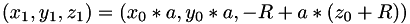
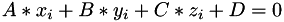
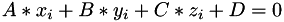

Introduction
This document is devoted to the implementation and details of spherical distortion correction.
Formulation
For correction of cameras distortion we propose to find lines, that are straights in reality, and to construct a transformation, that straighten this lines. Us usual straights are mapped to arcs after cameras distortion. We have to construct reverse transform, that should maps some arcs to straights.
Algorithms
In this section seveal algorithms of distortion correction are described and reffered to:
Inversion
Barrel Distortion Correction Algorithm.
Taylor series
Inversion
We assume that cameras distortion could be presented us sequence of projection of space to the plane, map of part plane to the segment of sphere and another projection. It is necessary to get image closed to the first projection. We have to construct continuous transform that maps sphere to the plane. As such transform we use inversion of the space http://en.wikipedia.org/wiki/Inversive_geometry
Let is a point on the sphere with center in the origin and radius . Let is the center of inverion, i. e. sphere contains inversion center and is mapped into the plane. Let is inversion radius. The image of point is the point belonging to the ray with initial point in inversion center, which contains preimage of point. By the inversion definition .
then
, , lie on the same line, then 
,i e
is positive by the choice of ray direction.
Image of the point is , It is obvious that only affects the scale. Picture size should be invariant, since (Consider the case )
After projective transform image of is
Determination of sphere radius
Let us known 3 points in the picture, images of which should lie on the same line after inversion. Then before projective transform these 3 points and inversion center should lie on the same circle. If we have , , , where  is determined by user, then , .
is determined by user, then , .
Moreover , since and lie in the same plane.
Let then , We got system of equations
We solve the system by Newton method. Let first approximation is :
Barrel Distortion Correction Algorithm.
http://www-ist.massey.ac.nz/dbailey/sprg/ivcnz/Proceedings/IVCNZ_73.pdf http://mipav.cit.nih.gov/documentation/HTML%20Algorithms/BarrelDistortionCorrection.html